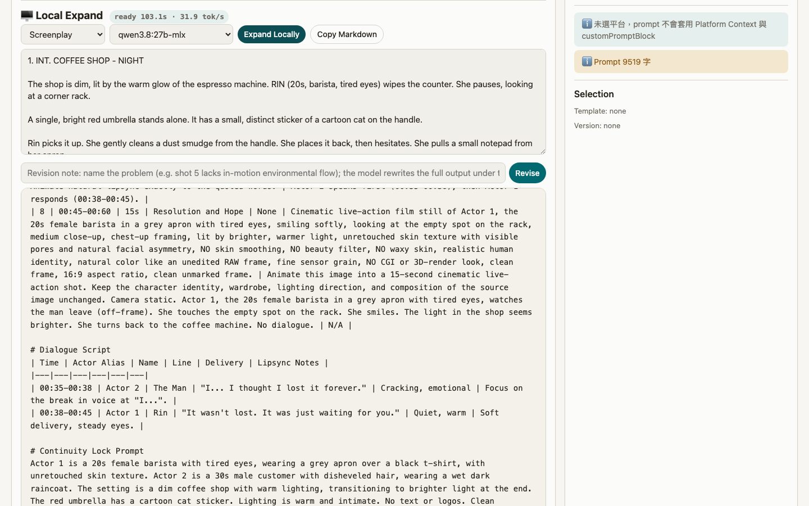
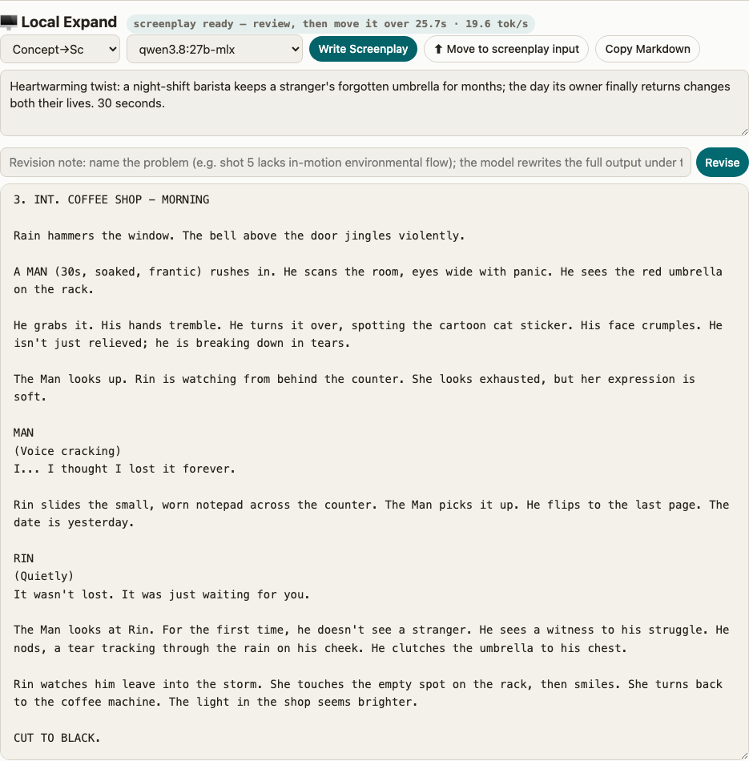
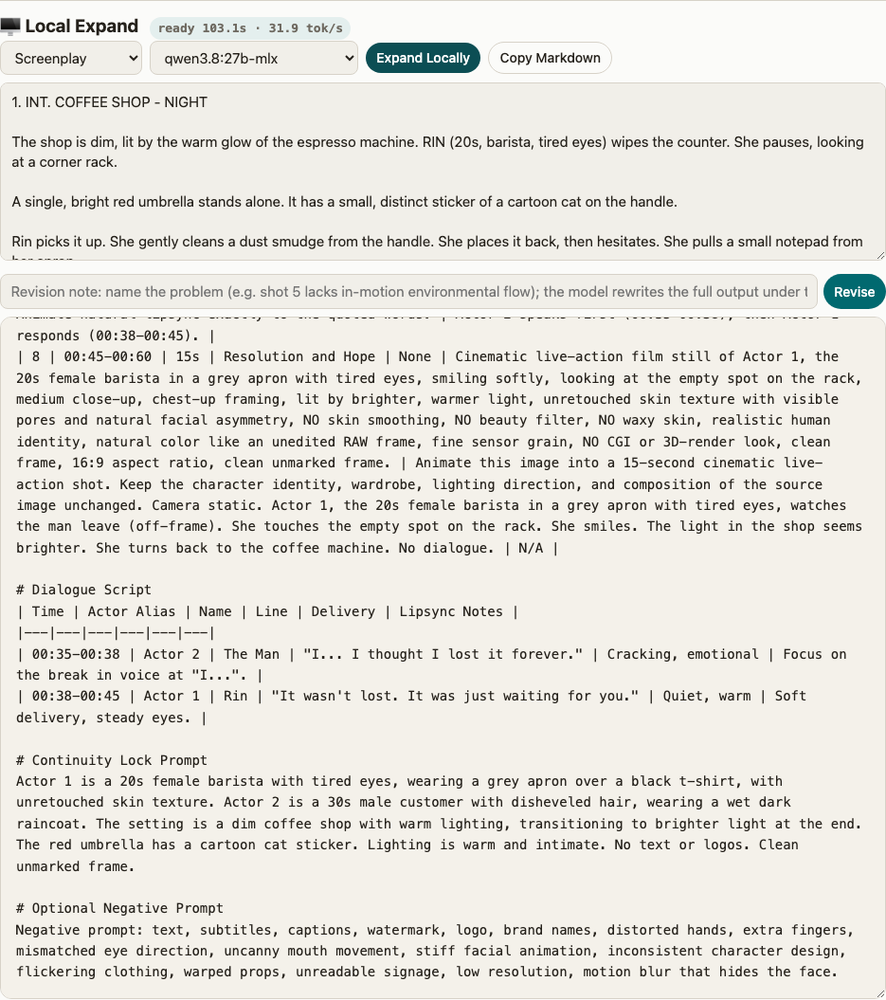
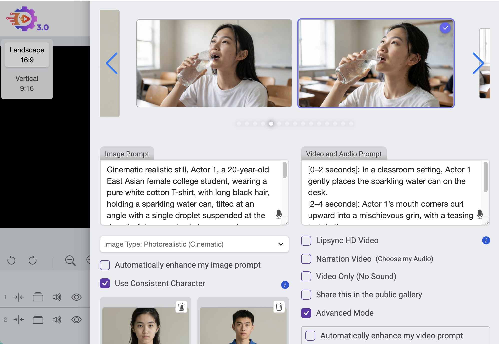

Video Prompt Studio
Turn one idea into production-ready prompts for AI video
generation: character bibles, timestamped shots, T2I / I2V pairs, lipsync-safe
dialogue.
A single HTML file that runs entirely in your browser. No account, no
upload, no tracking — and with a local LLM, nothing ever leaves your
machine.
Single-file web app · Free · Open source (MIT) · Works offline · 中文版
Try it now
Fetching the latest version…
The online app is fully functional for the copy-paste
workflow. Running it from your own machine (double-click
PromptStudio.command on macOS or PromptStudio.bat on
Windows) additionally connects it to your local
ollama for the fully on-device pipeline.
Watch a demo made with this pipeline
A found-footage style horror short. This is a deliberately raw cut: every prompt is the untouched template output from Video Prompt Studio, generated on VideoExpress with no prompt tuning and no re-rolls — only the music was added in editing. Treat it as the pipeline's floor, not its ceiling: this is what one pass produces before the revision loop and human curation do their work.
Why this exists
Custom AI agents keep getting sunset. Google's Gemini Gems is the latest: in-app notices point to an October 2026 retirement. Every rulebook you carefully built inside a vendor's agent goes with it.
Video Prompt Studio takes the opposite bet: your prompt pipeline should not live inside anyone's agent. It generates a complete, self-contained rulebook prompt — copy it into ChatGPT, Claude, Gemini, or whatever comes next, and it just works. And if you run a local model with ollama, you don't even need the copy-paste: the whole idea-to-shot-list pipeline runs on your own hardware.
What it does
You pick a mode — multi-shot storyboard, single shot, first/last frame, talking avatar, or vertical short-form — set duration and aspect, and describe your idea. The app compiles a production spec: hard constraints, platform calibrations (field-tested against VideoExpress.ai), photorealism rules, anti-subtitle-burn rules, and T2I drawability rules learned from real generation failures. An AI agent expands that spec into paste-ready prompts.

The local pipeline: concept → screenplay → shot prompts
With ollama detected, a Local Expand panel appears and the pipeline becomes three stages, all on-device:
- Concept → Script
Type a one-line story concept. A screenwriting ruleset (adapted from the MIT-licensed AI-drama-pound) drafts a complete, shootable screenplay — scene headings, planted twist clues, no expository dialogue. - Screenplay → Shot prompts
Review the script, move it over with one click. Dialogue is kept verbatim, scenes are decomposed into timestamped shots, characters become numbered actor aliases with frozen visual descriptions. - Revise until it's right
Type a critique ("shot 5 lacks in-motion environmental flow") and the model rewrites the full output with the complete rulebook still in context — iteration never drifts away from the platform rules.



Core features
- Agent-portable by design: the output is a plain prompt — works in any chat AI today, and any chat AI that exists next year
- Optional fully-local pipeline: concept, screenplay, shot prompts and revisions against your own ollama; nothing leaves your machine
- Field-tested platform rules: VideoExpress calibrations from real runs — actor aliasing against identity drift, lipsync dialogue limits, anti-subtitle-burn phrasing, per-shot density budgets
- T2I drawability rules: no mirror reflections, no picture-in-picture, static pose in T2I with motion reserved for I2V — distilled from prompts that actually failed to render
- Five modes: storyboard, single shot, first/last frame, talking avatar, vertical short-form — plus minimal / full / run-sheet output
- Run-sheet output for browser agents: a machine-executable work order an agent (e.g. Claude in Chrome) can follow to drive the video platform end to end
- Single file, local-first: templates and versions live in your browser's localStorage; export and import as JSON anytime
FAQ
Do I need an account or an API key?
No. The app itself calls no AI service. You either paste its output into a chat AI you already use, or point it at your own local ollama. GitHub is just where the code lives.
Is it free?
Completely free and open source (MIT). It's a tool built for our own video production pipeline, with no business model, sign-ups, or telemetry.
Where does my data live?
In your browser's localStorage, on your device. The online app makes no
network requests except the GitHub version check on this page. The local-LLM
mode talks only to localhost.
Which video generators does it target?
The built-in calibrations are field-tested against VideoExpress.ai. The generated specs are plain English though — the structure (character bible, timestamped T2I / I2V pairs) carries over to other generators, you just lose the platform-specific tuning.
What do I need for the local pipeline?
ollama with a capable model (we test with
Qwen 27B on a 36 GB Mac), plus serving the page from localhost — the bundled
PromptStudio.command / PromptStudio.bat launchers do
that in one double-click. Without ollama the panel simply hides and the
copy-paste workflow is untouched.
Is there a Chinese version?
Yes — the app is fully bilingual (toggle in the top bar), and this page has a 中文版.